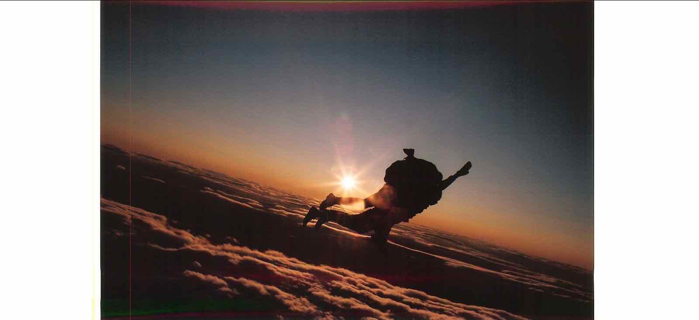

|
Hello World! Welcome to my page. I come from a remote place in India. All my teenage years I was active being normal :) , walking to school or cycling to a friends place, just like any other kid in India. Back then we know just cricket and there was less attention to other sports. I heard races on tracks growing up, but I heard the word Marathon for the first time after coming to Boston, MA. I felt amazing to hear that human body can run that long and fast. I started practicing long distance running in 2012 and trained for NYC Marathon, but unfortunately i got injured and also the Marathon was cancelled because of Mother Nature (Hurricane Sandy). It took almost 2 years to recover from plantar fasciitis. I overcame many injuries, but never gave up running. Running is way I enjoy myself and forget about my everyday stress. I am fortunte to have my family on my side. My wife Shilpa is helpful and always motivates. Both my kids enjoy hiking in woods in New England area or bike rides with me. Aayush is super excited to run outdoor with me once weather gets better. Some Ramdon clicks  |